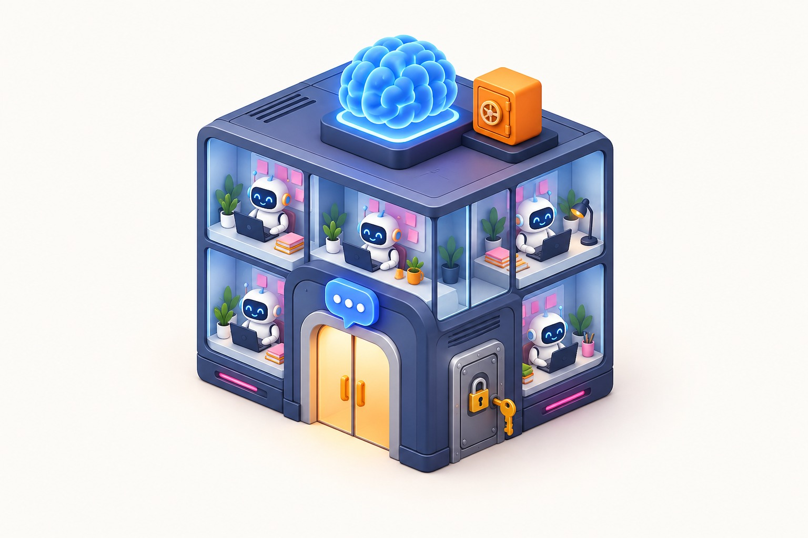
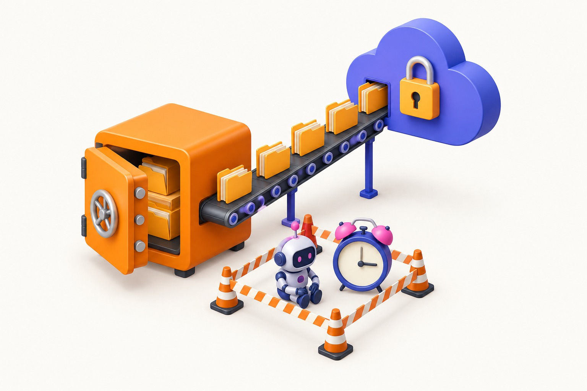
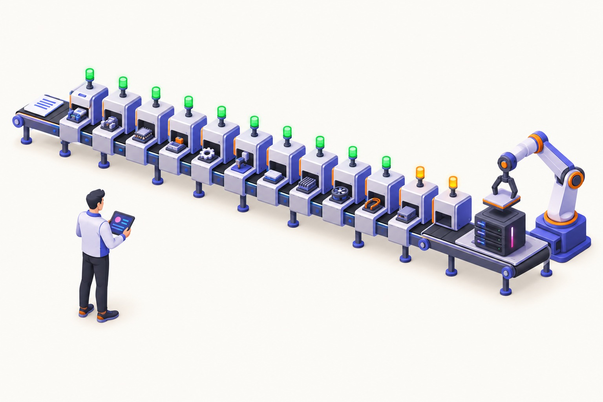

A equipe fala com agentes de IA pelo Telegram, cada pessoa com o seu nível de acesso. O administrador opera por SSH. A memória da empresa fica num segundo cérebro versionado. O backup se prova restaurável. Tudo instalado em fases, numa VPS limpa, com um relatório que diz o que ficou com você.
Telegram por papel e área1 agente por containerBackup que se provaIdempotente

2arquivos de entrada: quem é a empresa e quem é quem
1comando; 12 fases que podem rodar de novo sem refazer nada
3papéis (admin, operador, leitor) x 3 perfis de agente
0portas de aplicação abertas na internet
Como funciona
O protocolo em seis passos
Cada passo é uma decisão de desenho que o instalador aplica sozinho. O "onde está" aponta a pasta do repositório que faz aquilo.
1
Duas portas, e só duas
Telegram, para a equipe. Cada pessoa é cadastrada pelo número dela com um papel e as áreas que pode acessar. Fala com um bot; o bot entrega pro agente certo e nega o resto.
SSH, só para o administrador técnico. Entra por chave; senha e root ficam desligados desde a segunda fase.
Não existe porta 3. Nenhum painel exposto. Os painéis técnicos abrem só pela rede privada.
Onde está: seguranca/ · bin/adicionar-pessoa.sh
2
Um agente por container, com teto
Um agente = uma área + um perfil (leitura, operação ou admin), sozinho num container: usuário comum, sem acesso ao Docker, limite de memória próprio.
O financeiro não enxerga o comercial. Um estourar memória não derruba os outros. As permissões valem por fora do modelo, não por prompt.
Quantos cabem é conta: 4 GB = 1 agente; 8 GB = 2; 16 GB = 4. Passou do teto, o instalador recusa.
Identidade e skills por área, montadas só leitura, no padrão do Claude Code.
1 bot = 1 router, único processo que fala com o Telegram. Lê a lista de pessoas e a de agentes e fala com cada agente por um canal privado com senha própria.
Interseção com negação por padrão: pessoa ativa, área do agente entre as dela, perfil do agente dentro do papel. Falhou uma, negado e auditado.
Revogar vale na hora, mesmo em conversa aberta. Turno interrompido vira "incerto", nunca "feito".
Onde está: motores/multi-session/ · docs/contrato-motor.md
pessoa (Telegram) ──► router ──► confere 3 coisas ──► agente da área ──► resposta
pessoa ativa?
área do agente está nas áreas dela?
perfil do agente cabe no papel dela?
3 sim → entrega, registra na auditoria 1 não → nega, registra na auditoria
leitor → só agente leitura
operador → leitura e operacao
admin → todos
4
A memória da empresa: o cérebro
É a memória dos agentes, não das pessoas. Uma pasta na VPS com arquivos de texto que o agente lê antes de responder e onde grava o que aprende. O agente acorda zerado: só sobrevive o que foi gravado.
Uma parte comum (empresa, produtos, equipe, decisões): todo agente lê, só o admin escreve. Uma pasta por área (contexto, tarefas, lições, diário, skills): só o agente daquela área lê e escreve. A separação é o que cada container monta, não uma instrução.
As pessoas não abrem o cérebro: falam com o agente da área, e ele responde com a memória dela. O administrador técnico vê tudo por SSH e git.
"Versionado em git" = toda mudança registrada (o quê, quando), dá pra voltar atrás e auditar; e uma cópia vai pra um repositório privado da empresa, fora da VPS.
Quem já usa o Expert Brain pode ligá-lo como memória semântica; é opcional, os conceitos são os mesmos.
Onde está: cerebro/ · cerebro/RAMOS.md
5
Backup que se prova, e quarentena ao voltar
Cópia diária cifrada de cérebro, estado dos agentes e auditoria para um bucket externo. Sucesso é o código de retorno, nunca só a existência do arquivo.
Teste de restauração mensal, automático, em pasta separada.
Restaurar do zero é um comando: a VPS nova sobe em quarentena, sem responder, até o admin liberar.
As cópias ficam fora da VPS (bucket Cloudflare R2 ou Backblaze B2). A VPS inteira pode morrer: VPS nova + um comando = tudo de volta.
Quem avisa que a VPS morreu não mora nela: a VPS manda "estou viva" a cada 5 min pra um serviço de fora (healthchecks.io ou um Uptime Kuma em outra máquina). Silêncio = alerta no celular. O backup manda um segundo sinal ao terminar.
Onde está: backup/ · bin/restaurar.sh · observabilidade/

6
Instala em fases e diz o que ficou com você
2 arquivos e 1 comando. 12 fases, cada uma reexecutável: rodar de novo não refaz o que está pronto. Falhou no meio, corrige e roda de novo.
Relatório no fim com a lista "Fica com você": o que só a pessoa pode fazer (criar o bot, colar a credencial). Enquanto faltar algo, diz PENDENTE, nunca "sucesso".
A porta SSH só fecha depois que a segunda conexão é comprovada, e volta sozinha em 10 minutos se não for.
Onde está: instalar.sh · onboarding/SETUP.md · lib/comum.sh

O bloco
Fixo em toda instalação. Cresce só onde a empresa precisa.
Segurança, router, apoio, cérebro e backup são iguais em toda VPS. O que cresce é o número de agentes, áreas, pessoas e papéis.
fixo
Segurança do host
Firewall, fail2ban, atualizações automáticas, SSH só por chave, Docker fechado em 127.0.0.1. Instalado antes de qualquer agente.
fixo
Router do Telegram
1 bot, 1 processo, sem root, 256 MB. Autoriza, encaminha e audita. Vem do repositório da porta, em versão marcada.
fixo
Apoio (3 containers, dentro da VPS)
Uptime Kuma: monitor de dentro, 1 por container; agente caiu = aviso no Telegram. Não vê a VPS morrer. Dozzle: logs ao vivo, só leitura. Proxy do Docker: o porteiro; os dois só podem listar e ler, nunca parar ou executar. Não é contratação: vem no template, ~350 MB.
fixo
Cérebro
Pasta versionada: comum (só leitura para os agentes) e uma por área. Curadoria semanal.
fixo
Backup e quarentena
Roda de dentro, mas as cópias moram fora (bucket R2 ou B2, contratado pelo cliente). Teste mensal; restauração sobe muda até o admin liberar. Sinal "VPS viva" pra um monitor de fora.
cresce
Agentes
1 por área, 1 por container, com teto de memória. O primeiro nasce na instalação; os próximos com um comando, até o orçamento da RAM.
Fora da VPS
O que o cliente contrata além da VPS
A VPS é o único servidor. O resto é conta em serviço externo, quase tudo grátis. Nada de domínio, servidor web, banco gerenciado ou e-mail.
obrigatório
VPS Ubuntu 24.04, 8 GB
Hostinger, Hetzner, Contabo. R$ 44 a 78 por mês. O bloco inteiro roda aqui.
obrigatório
Bot do Telegram
Grátis, criado no @BotFather na conta do dono. É a porta da equipe. Nunca reaproveitar um bot em uso.
obrigatório
Conta Claude ou chave de API
É o que o agente usa para pensar. Um login por agente. Assinatura do dono da área ou consumo na Anthropic.
para ter backup
Bucket fora da VPS
Cloudflare R2 (10 GB grátis) ou Backblaze B2. R$ 0 a 5 por mês. Sem ele o backup fica desligado e o relatório cobra.
recomendado
Monitor externo "VPS viva"
healthchecks.io (grátis) ou um Uptime Kuma em outra máquina. O único jeito de saber que a VPS inteira caiu.
recomendado
Repositório privado pro cérebro
GitHub da empresa, grátis. Segunda cópia da memória, fora da VPS, com histórico.
opcional
Cofre de segredos
1Password Business ou Teams. Sem ele, sops+age (grátis) ou arquivo protegido só no primeiro boot.
opcional
Tailscale
Rede privada. Só se quiser abrir os painéis de fora ou fechar a porta 22 pública. Grátis pessoal; pago por usuário em empresa.
não precisa
Domínio, site, banco, e-mail
Nada disso entra. O painel é o Telegram; os painéis técnicos ficam fechados dentro da VPS.
Nível de prova
O que já foi provado e o que ainda não foi
Primeira instalação real em 20/09/2026 (Hostinger KVM 2, 8 GB, Ubuntu 24.04 virgem). O template ainda não está liberado para cliente ou aluno: dos dez gates de liberação passou meio.
provado
Instalação completa em VPS limpa
Fases 0 a 9 em 8 minutos de parede, 3 execuções
Agente no ar e saudável em menos de 60 s após a credencial
Segunda execução: 0 mudanças
provado
Acesso seguro
Root e senha recusados por SSH; admin só por chave
Firewall com limite de tentativas e fail2ban ativos
Hardening 35 de 38 itens
provado
Versão marcada do router
Deploy leva o clone até a versão escolhida
Skills da área visíveis dentro do container
pendente
Três pessoas, três papéis
Leitor barrado em agente de operação, operador barrado fora da área, revogação no meio da conversa. Depende do bot real.
pendente
Backup e restauração do zero
Existem no código com testes; nunca rodaram em VPS real com bucket real e cronômetro.
fora por enquanto
Rede privada (Tailscale)
Instalado, não conectado. A porta 22 fica aberta, só com chave. Decisão de 20/09: sai da frente até virar necessidade.
Dois repositórios
A casa e a porta
Este template é a casa: igual para todo cliente. O router do Telegram é a porta: varia por cliente. O que une os dois é um contrato de uma página.
Casa: vps-inteligente
Segurança do host, pastas padrão, cérebro, 1 container por agente, backup, painéis, instalador
Escreve pessoas.yaml e agentes.yaml
Instala uma versão marcada da porta e nunca avança sozinha
Porta: telegram-multi-session
Tudo que é Telegram: 1 bot ou vários, grupos, pareamento, comandos, formato das respostas
Só lê as duas listas; fala com cada agente pelo protocolo do executor
Publica versão quando muda comportamento visível
Contrato: formato das duas listas, protocolo do executor (versão 1), caminhos em /run/agentes e da auditoria, variáveis do compose do router. Mudou um item, muda a versão nos dois lados. Texto completo em docs/contrato-motor.md.